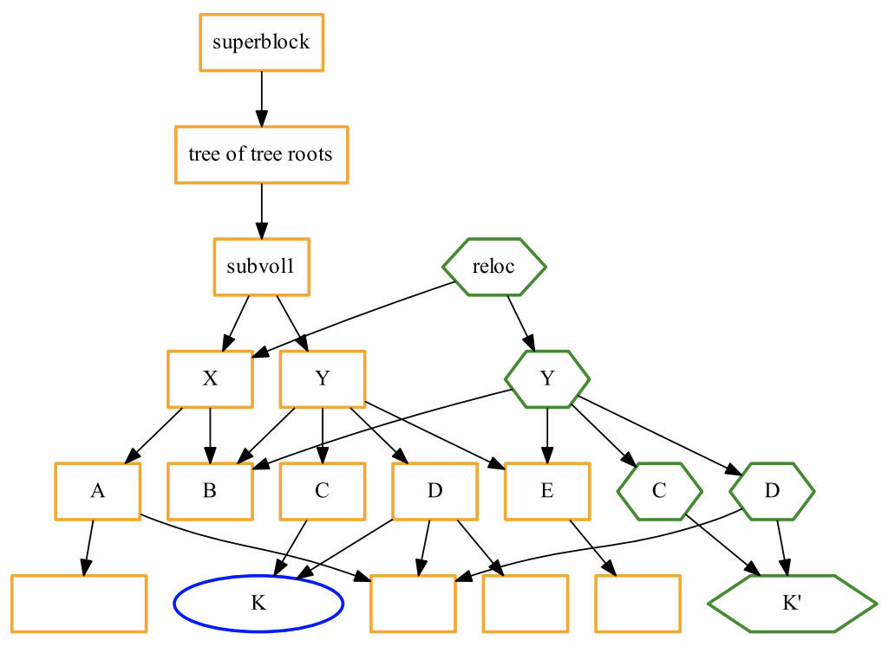

diff <(stat -c '%n %y' **) <(sleep 2; date > a.txt; stat -c '%n %y' **)
int inotify_init(void); // 返回 fd
int inotify_add_watch(int fd, const char *pathname, uint32_t mask);
observer = Observer() # PollingObserver()
observer.schedule(event_handler, ".", recursive=True)
observer.start()
BPF_CALL <helper>:bpf_get_current_pid_tgid(), bpf_map_lookup_elem(), …, side-effect 严格可控让我们借助 Coding Agent，“在没有直接经验的领域（如语言、技术、框架等）进行一些编程工作” 吧！虽然我作为《操作系统》的教师，知道 Linux 内核内部的机制，但我决定在对话时假装自己对系统内的这些机制一无所知。模型：deepseek-v4-pro (high)，成本：¥ 0.72。
diff <(stat -c '%n %y' **) <(sleep 2; date > a.txt; stat -c '%n %y' **)
diff <() <() 的等价高效实现”git reset --hard 清除的工作区，只要不 git gc 都可以恢复！.git/objects/)blob [length] \0[content]
[mode] [filename]\0[hash]\n...
tree [hash]\nparent [hash]...ls .git/objects/*/* | xargs ./git-cat
refs/heads/[branch] 是指向 commit object 的指针git checkout -b new → 新建一个 new 的文件 (指针)git commit → 创建 tree/commit object → 更新 refs/heads/[branch]
ref: refs/heads/main
.git/**/*，绘制 object 和 refs 数据结构图git reset --hard D
git cherry-pick A # git diff CA A | git apply
git cherry-pick B # git diff A B | git apply
git worktree add ../experiment # 在另一个目录切换到 experiment 分支
cat ../experiment/.git # 又是一个 “指针”
ioctl(fd, BTRFS_IOC_SNAP_CREATE, ...);

burn /path-to-dir/ /dev/cdrw0
mount -t overlay overlay \
-o lowerdir=L1:L2:...,upperdir=U,workdir=W \
path_to_merged
一种联合文件系统，允许将多个目录 “层叠” 在一起，形成单一的虚拟目录。OverlayFS 是容器 (如 docker) 的重要底层机制。它也可以用于实现文件系统的快照、原子的系统更新等。
FROM ubuntu:22.04
ENV DEBIAN_FRONTEND=noninteractive
...
RUN apt-get update
RUN apt-get install -y ... && apt-get upgrade -y
int (*setxattr)(const char *, const char *, const char *, size_t, int)
.学习资料114514 的真正隐藏：getdents64 无法看到，但可以 cd 进入我们可以使用符号链接创建 “近乎任意” 的目录结构，包括任意的图结构 (状态机)，操作系统也能正确解析。操作系统的机制 (系统调用、文件系统……) 给了我们无限的创作空间。
如果我们摆脱 “块设备” 的固有印象，把文件系统看作是数据结构，就可以不受约束地设计出有趣的操作系统机制：监控 (inotify)、快照 (git/btrfs)、覆盖 (OverlayFS)，甚至是彻底的定制化文件系统 API。